2025-03-02 16:53
_Status: flashcard_zero riscritto_finito revisione_finita
chimica-Lez02
Stechiometria e Nomenclatura: La Ricetta della Chimica
- Stechiometria: Viene definita come “l’aritmetica della chimica”. Si tratta della ricetta da seguire e quantificare per una reazione chimica. L’esempio del panino viene usato per spiegare come un oggetto complesso sia fatto di più parti e preparato seguendo una ricetta.
- Nomenclatura: È definita come “una parte un po’ noiosa” ma necessaria per dare un nome corretto alle sostanze e capirsi in chimica.
Masse Atomiche, Molecolari e UMA
- Massa vs. Peso: È fondamentale parlare di massa (proprietà assoluta di un atomo/molecola) e non di peso (legato alla forza di gravità).
- Elementi e Molecole: Gli elementi possono esistere come singoli atomi (metalli, gas nobili come l’elio) o in forma molecolare (O2, P4).
- Composti Molecolari vs. Ionici: I composti molecolari hanno legami covalenti, mentre quelli ionici sono formati da ioni in reticoli cristallini. Nei composti ionici non si parla di molecole.
- Calcolo della Massa:
- Massa atomica: espressa in uma per un atomo.
- Massa molecolare: per una molecola (somma delle masse atomiche). Esempio: O2 = 2 * 16 uma = 32 uma.
- Massa formula: per composti ionici (somma delle masse atomiche), usata al posto di “massa molecolare”. Esempio: NaCl = massa atomica Na + massa atomica Cl.
Dal Livello Microscopico al Macroscopico: Il Concetto di Mole
-
Unità di Massa Atomica (UMA): Gli UMA sono unità piccolissime (1/12 della massa del carbonio-12). In laboratorio si usano grammi, kg, tonnellate.
-
La Mole come Ponte: La mole è la “moneta di scambio” tra il livello microscopico (UMA) e macroscopico (grammi).
- Se un atomo di elio pesa come quattro atomi di idrogeno, allora n atomi di elio peseranno come 4_n_ atomi di idrogeno.
- Si sceglie un n sufficientemente grande per cui 4 g di elio contengono tanti atomi quanti 1 g di idrogeno.
-
Numero di Avogadro (Na): È il valore di n che rende la massa molecolare in uma uguale alla massa in grammi. Na = 6,022 x 10^23. 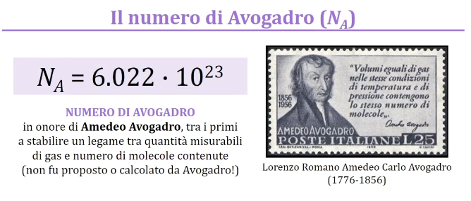
- 1 g di idrogeno (massa 1 uma) contiene 6,022 x 10^23 atomi.
- 4 g di elio (massa 4 uma) contengono lo stesso numero di atomi.
-
Definizione di Mole (2018): Una mole contiene esattamente un numero di Avogadro di particelle.
- Esempio: una mole di molecole d’acqua = 6,02 x 10^23 molecole d’acqua.
-
Massa Molare: È la massa di una mole di una sostanza, espressa in grammi.
- Una mole di atomi di carbonio pesa 12,01 g (massa atomica del carbonio dalla tavola periodica convertita in grammi).
- Esempio: la massa molare del carbonio è 12,01 g/mol.
Stechiometria di Reazione ed Equazioni Chimiche
-
Definizione: La stechiometria di reazione indica i rapporti in massa dei componenti in una reazione chimica.
-
Equazioni Chimiche: Devono essere bilanciate per rispettare la conservazione della massa.
- I coefficienti stechiometrici sono i numeri davanti ai reagenti e prodotti che bilanciano l’equazione.
-
Esempio del Panino: 1 pane + 1 carne + 2 formaggio + 5 cetrioli → 1 panino
- I coefficienti stechiometrici indicano il rapporto molare tra i componenti.
-
Esempio della Combustione del Metano: CH4 + O2 → CO2 + H2O (non bilanciata)
-
Bilanciamento: CH4 + 2 O2 → CO2 + 2 H2O
-
Significato: 1 mole di metano reagisce con 2 moli di ossigeno.
-
Traduzione in grammi: 16 g di metano reagiscono con 64 g di ossigeno.
-
-
Conservazione della Massa: La somma delle masse dei reagenti deve essere uguale alla somma delle masse dei prodotti. Il numero di moli non si conserva necessariamente.
-
Livelli di Analisi: Macroscopico (ciò che si osserva), Microscopico (composizione a livello atomico/molecolare), Simbolico (equazioni chimiche). 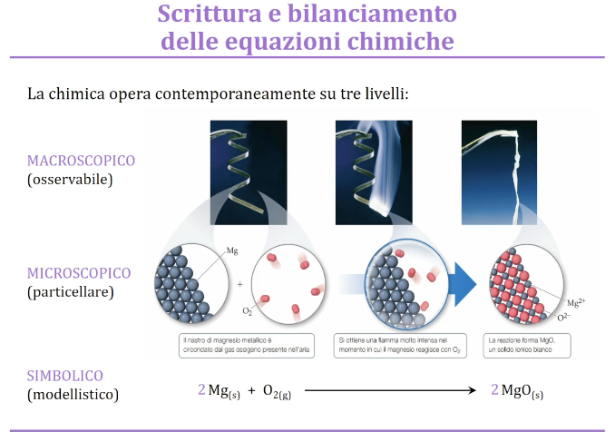
- Esempio del Magnesio che Brucia:
- Macroscopico: Magnesio metallico brucia producendo un fumo bianco e un prodotto bianco.
- Microscopico: Atomi di magnesio e molecole di ossigeno si ricombinano. Il prodotto è un reticolo di ioni Mg2+ e O2-.
- Simbolico: Mg(s) + O2(g) → MgO(s) (non bilanciata).
- Bilanciata: 2Mg(s) + O2(g) → 2MgO(s).
- Esempio del Magnesio che Brucia:
Reagente Limitante
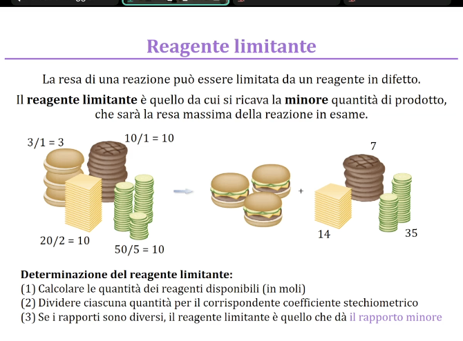 Il reagente limitante è il reagente che determina la quantità massima di prodotto che si può formare in una reazione chimica. Per identificarlo, bisogna confrontare le quantità disponibili dei reagenti con i loro coefficienti stechiometrici.
Procedura:
- Contare gli ingredienti in moli: Convertire la quantità di ciascun reagente in moli.
- Dividere per il coefficiente stechiometrico: Dividere il numero di moli di ciascun reagente per il suo coefficiente stechiometrico nell’equazione bilanciata.
- Confrontare i rapporti: Il reagente con il rapporto più basso è il reagente limitante.
Esempio:
Consideriamo la preparazione di un panino. La “ricetta” è:
- 1 panino
- 1 fetta di carne
- 2 fette di formaggio
- 5 cetrioli
Se abbiamo:
- 3 panini
- 10 fette di carne
- 20 fette di formaggio
- 50 cetrioli
Dividiamo ciascuna quantità per il coefficiente stechiometrico corrispondente:
- Panini: 3 / 1 = 3
- Carne: 10 / 1 = 10
- Formaggio: 20 / 2 = 10
- Cetrioli: 50 / 5 = 10
Il rapporto più basso è 3, corrispondente ai panini. Quindi, il reagente limitante sono i panini: possiamo fare solo 3 panini.
- Calcolo dell’eccesso: Possiamo anche calcolare quanto rimane degli altri ingredienti.
- Formaggio avanzato: 20 - (3 * 2) = 14 fette
- Cetrioli avanzati: 50 - (3 * 5) = 35 cetrioli
Resa Percentuale
La resa percentuale indica quanto prodotto si ottiene effettivamente rispetto alla quantità massima teorica possibile.
Formula:
Resa percentuale = (Quantità di prodotto effettivamente ottenuta / Quantità massima teorica ottenibile) * 100
- Quantità effettivamente ottenuta: La quantità di prodotto misurata sperimentalmente.
- Quantità massima teorica: La quantità di prodotto calcolata in base al reagente limitante.
Esempio:
Se teoricamente dovremmo ottenere 3.5 grammi di ossido di magnesio (MgO), ma ne otteniamo solo 3.3 grammi, la resa percentuale è:
Resa percentuale = (3.3 g / 3.5 g) * 100 = 94.29%
Reazione Quantitativa:
Una reazione con una resa del 100% è detta quantitativa.
Possibili Cause di Resa Inferiore al 100%:
- Errori sperimentali: Perdita di prodotto durante la manipolazione.
- Reazioni secondarie: Formazione di sottoprodotti indesiderati.
Nomenclatura Chimica
La nomenclatura chimica è un sistema di regole per assegnare nomi univoci ai composti chimici, permettendo a tutti i chimici di comunicare in modo chiaro e preciso. L’IUPAC (International Union of Pure and Applied Chemistry) è l’organizzazione che si occupa di standardizzare la nomenclatura chimica.
Metalli e Non Metalli
La tavola periodica può essere divisa in due zone principali: 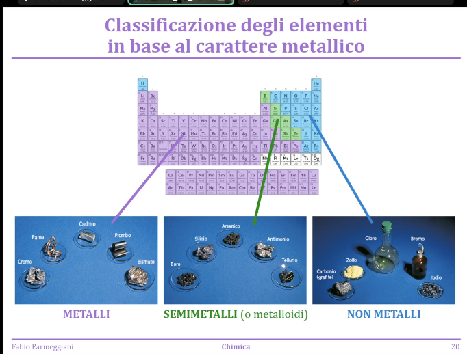
- Metalli: Generalmente lucenti, buoni conduttori di elettricità, duttili e malleabili. Si trovano principalmente nella parte inferiore a sinistra della tavola periodica.
- Non Metalli: Generalmente solidi o gas, poco conduttivi e fragili. Si trovano nella parte superiore a destra della tavola periodica.
- Semimetalli: Elementi con proprietà intermedie tra metalli e non metalli, situati nella zona di confine tra le due categorie. Ai fini della nomenclatura, i semimetalli sono assimilati ai non metalli.
Numero di Ossidazione
Il numero di ossidazione (N.O.) rappresenta la carica che un atomo avrebbe se tutti i legami fossero ionici. È un concetto utile per la nomenclatura, anche se non sempre corrisponde alla reale distribuzione di carica.
Regole per Assegnare il Numero di Ossidazione:
-
Elementi Liberi: Il numero di ossidazione di un atomo in un elemento libero è sempre zero. Esempio: , .
-
Somma dei Numeri di Ossidazione:
- In una specie neutra, la somma dei numeri di ossidazione è zero.
- In uno ione, la somma dei numeri di ossidazione è uguale alla carica dello ione.
- Esempio: , N.O. = ; , la somma dei N.O. deve essere .
-
Metalli dei Gruppi 1 e 2:
- I metalli del gruppo 1 hanno sempre N.O. .
- I metalli del gruppo 2 hanno sempre N.O. .
- Esempio: in ha N.O. ; in ha N.O. .
-
Fluoro: Il fluoro ha sempre N.O. .
-
Idrogeno: L’idrogeno ha N.O. , tranne quando è legato a un metallo, nel qual caso ha N.O. .
- Esempio: in ha N.O. ; in ha N.O. .
-
Ossigeno: L’ossigeno ha N.O. , tranne nei composti con il fluoro e nei perossidi (dove è ).
- Esempio: in ha N.O. ; in ha N.O. .
-
Elementi dei Gruppi 15, 16 e 17: Quando si combinano con i metalli in composti binari, hanno N.O. rispettivamente , e .
- Esempio: in ha N.O. ; in ha N.O. ; in ha N.O. .
Nomenclatura degli Ioni e Ossidi Metallici
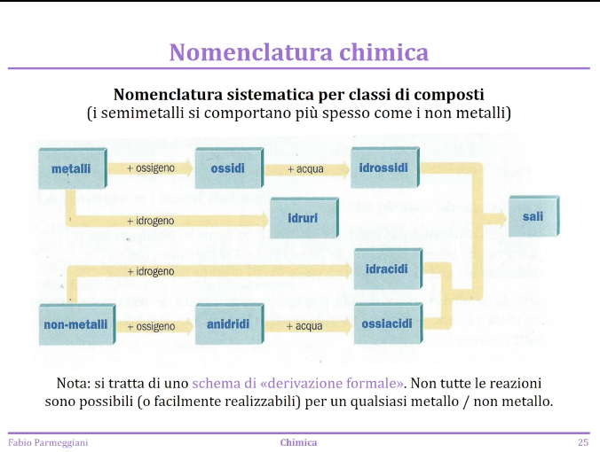
Ioni Metallici (Cationi)
- Definizione: I cationi metallici derivano da metalli che hanno perso elettroni.
- Nomenclatura Generale: Si usa la formula “ione + nome del metallo”.
- Esempio: si chiama ione sodio.
Metalli con molteplicità di ossidazione
-
Ambiguità: Nei metalli che possono avere diversi numeri di ossidazione, è necessario specificare quale numero di ossidazione è presente.
-
Notazione di Stock: Si indica il numero di ossidazione con un numero romano tra parentesi dopo il nome del metallo.
- Esempio: Ione rame (I) per .
-
Nomenclatura Tradizionale (suffissi oso e ico): Si usano i suffissi oso per il numero di ossidazione più basso e ico per il numero di ossidazione più alto, applicandoli al nome del metallo.
- Esempio:
- Ione rameoso per (rame (I)).
- Ione rameico per (rame (II)).
- Esempio:
Ossidi Metallici
-
Derivazione: Formalmente derivati dalla reazione di un metallo con l’ossigeno.
-
Nomenclatura: Si utilizza la formula “ossido di + nome del metallo”. L’ossigeno in questi composti è presente come ione .
- Esempio: Ossido di potassio ().
-
Metalli con più numeri di ossidazione: Anche qui è necessario specificare il numero di ossidazione.
- Esempio:
- Ossido di ferro (II) () o ossido ferroso.
- Ossido di ferro (III) () o ossido ferrico.
- Esempio:
Idrossidi Metallici
-
Derivazione: Formalmente derivati dalla reazione di un ossido metallico con l’acqua. Contengono lo ione idrossido .
-
Nomenclatura: “Idrossido di + nome del metallo”.
- Esempio: Idrossido di potassio ().
-
Esempio pratico: Reazione dell’ossido di magnesio () con acqua per formare idrossido di magnesio (). L’idrossido di magnesio, in sospensione, fa cambiare colore a un indicatore, evidenziando la presenza di ioni idrossido.
-
Ioni con più numeri di ossidazione:
- Idrossido ferrico ().
Idruri Metallici
- Derivazione: Derivano formalmente dalla combinazione di un metallo con l’idrogeno. In questi composti, l’idrogeno ha numero di ossidazione -1 e si presenta come ione .
- Nomenclatura: “Idruro di + nome del metallo”.
- Esempi:
- Idruro di sodio ().
- Idruro di calcio ().
- Esempi:
Idruri Non Metallici
- Idruri Molecolari: Composti binari di non metalli con idrogeno. Hanno nomi comuni (non sistematici).
- Esempi:
- Acqua ().
- Metano ().
- Ammoniaca ().
- Esempi:
- Idracidi: Composti binari di idrogeno con non metalli che presentano proprietà acide. Hanno una nomenclatura sistematica.
- Nomenclatura degli idracidiGli idracidi derivano da un non metallo e idrogeno se puri e anidri si considerano composti molecolari: suffisso -uro di idrogeno se in soluzione acquosa si considerano acidi: acido suffisso -idrico
- cloruro di idrogeno in acqua: acido cloridrico
- 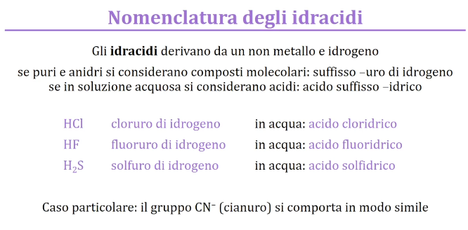
Anidridi (Ossidi Non Metallici)
- Derivazione: Derivano formalmente dalla reazione di un non metallo con l’ossigeno.
- Nomenclatura: Ci sono due approcci:
-
Tradizionale: “Anidride + nome del non metallo” dove prefisso e suffisso dipendono dal numero di ossidazione.
-
IUPAC (più semplice): Si usa un prefisso per indicare il numero di atomi di ossigeno presenti, seguito da “ossido di + nome del non metallo”.
-
Esempi con lo zolfo (numeri di ossidazione +4 e +6):
- :
- Tradizionale: Anidride solforosa.
- IUPAC: Diossido di zolfo.
- :
- Tradizionale: Anidride solforica.
- IUPAC: Triossido di zolfo.
- :
-
se più di 2 si aggiunge ipo per il più basso e per per il più alto
-
Ossiacidi e Ossianioni
- Ossiacidi: Acidi contenenti ossigeno, idrogeno e un altro elemento (spesso un non metallo).
- 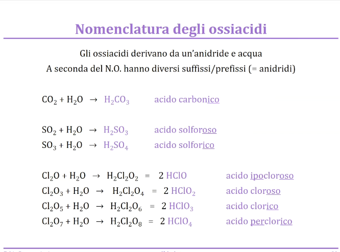
- Ossianioni: Ioni negativi derivati dagli ossiacidi per rimozione di uno o più ioni .
-
La nomenclatura degli ossianioni cambia i suffissi rispetto agli acidi:
- -oso diventa -ito
- -ico diventa -ato
Esempio: L’acido carbonico () forma lo ione carbonato (). 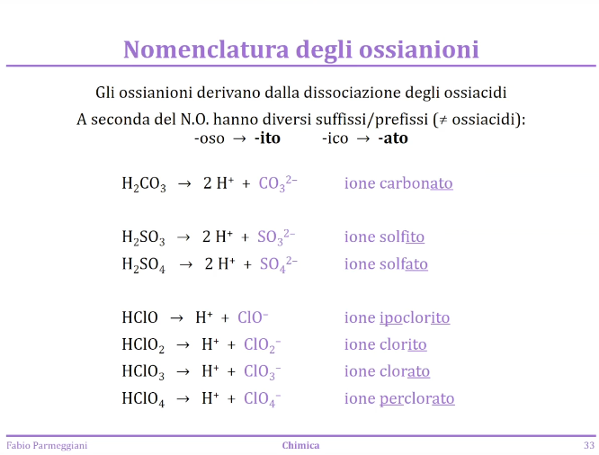
-
Sali
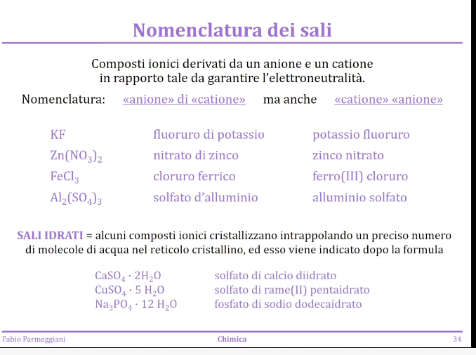
- Formazione: Derivano dalla combinazione di cationi (generalmente metallici) e anioni (spesso ossianioni).
- Nomenclatura: Si nomina prima l’anione e poi il catione.
- Esempio: Solfato di rame (II) ().
- Sali idrati: Alcuni sali cristallizzano incorporando molecole d’acqua nella loro struttura.
- Per nominare questi sali, si aggiunge il termine “-idrato” preceduto da un prefisso che indica il numero di molecole d’acqua per unità formula del sale.
- Esempio: Solfato di rame (II) pentaidrato (). 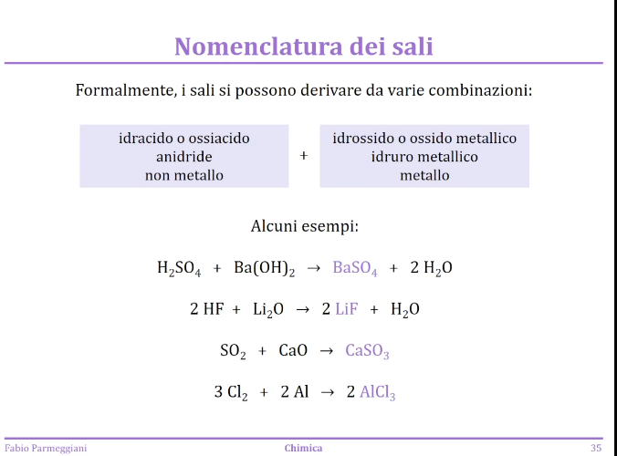
- Per nominare questi sali, si aggiunge il termine “-idrato” preceduto da un prefisso che indica il numero di molecole d’acqua per unità formula del sale.
Reazioni Redox
-
Definizione: Reazioni in cui cambia il numero di ossidazione di almeno uno degli elementi coinvolti. Implicano trasferimento di elettroni.
- Ossidazione: Aumento del numero di ossidazione (perdita di elettroni).
- Riduzione: Diminuzione del numero di ossidazione (acquisto di elettroni).
-
Terminologia:
- Agente riducente: Specie che causa la riduzione di un’altra specie ossidandosi a sua volta.
- Agente ossidante: Specie che causa l’ossidazione di un’altra specie riducendosi a sua volta.
- 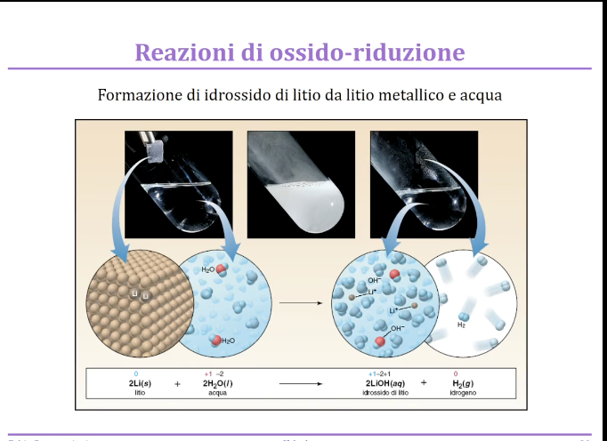